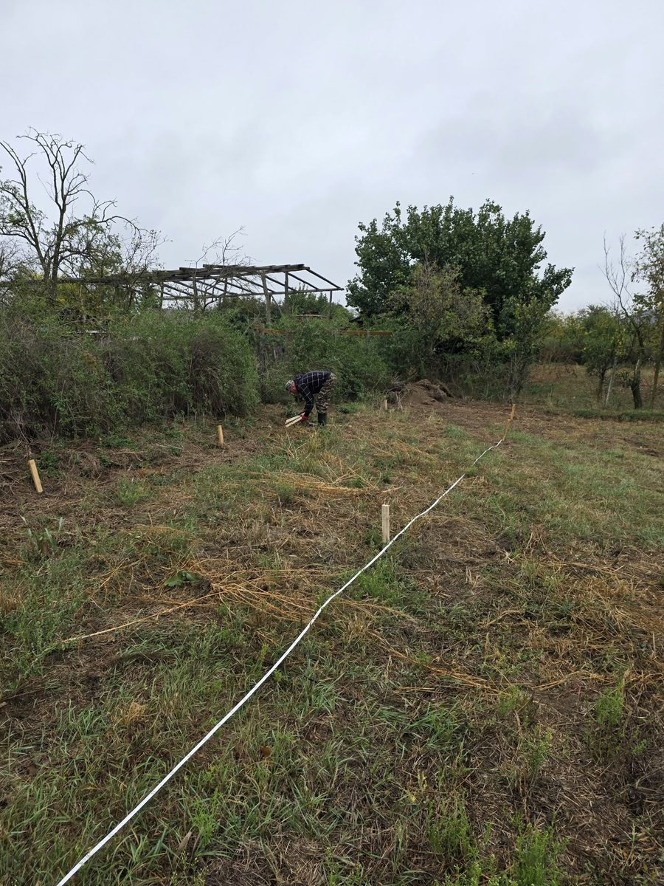
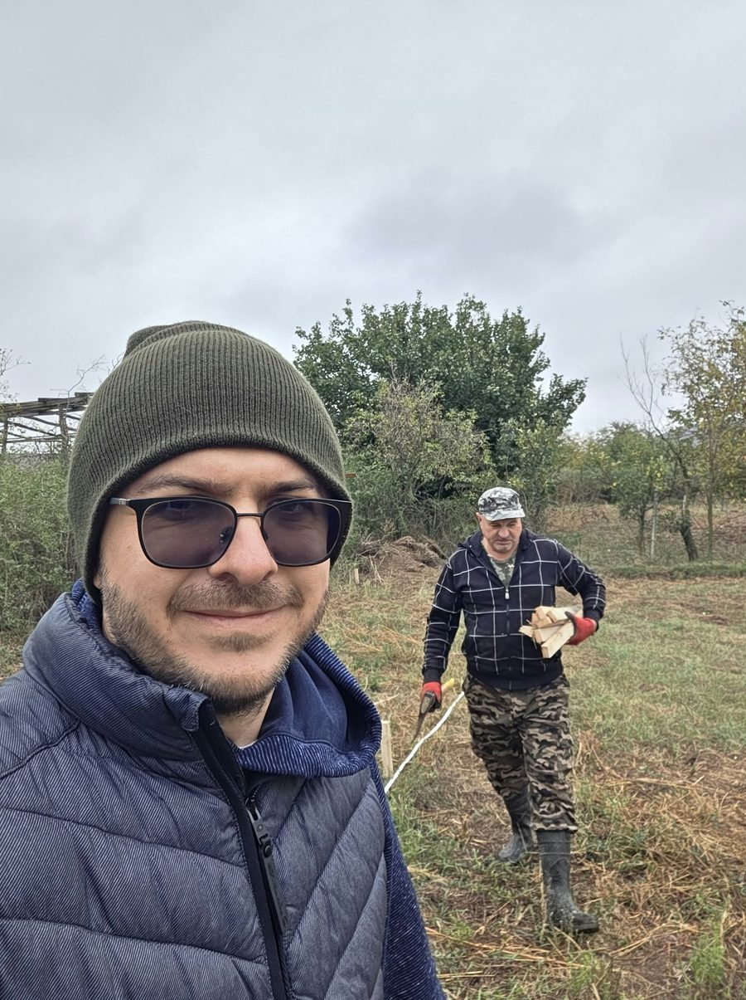
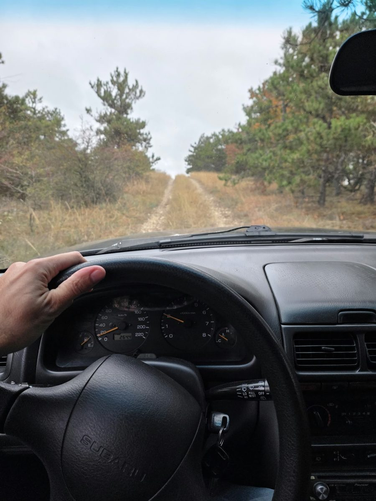
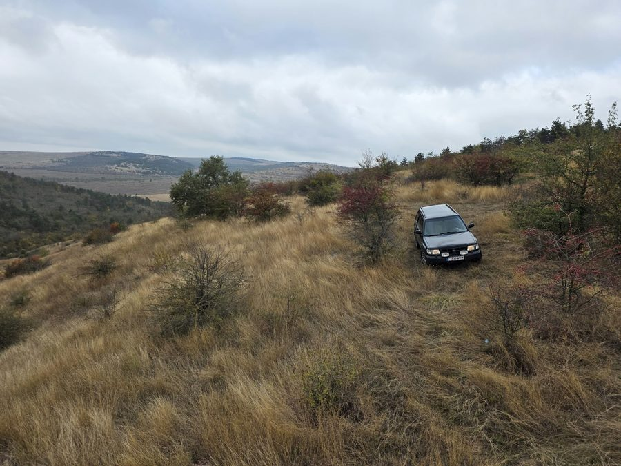

Trasarea terenului pentru plantarea din noiembrie și o urcare pe dealul de la Crucea
Am continuat lucrările de trasare a terenului pentru plantarea din luna noiembrie. Cu ruleta întinsă pe linie și țăruși de șipcă bătuți la distanțele din plan, am marcat rândurile și pozițiile pe parcela curățată, pe lângă gardul viu de la margine; ziua a fost înnorată și rece, numai bună de lucru.
După-amiază am urcat pe dealul de la Crucea, Dealul Allah Bair, pe drumul de pământ care trece prin plantația de pin negru. Sus, iarba uscată de stepă, păducei și măceși plini de fructe roșii, tufe de scumpie ruginii și priveliștea peste vale, spre culmile din jur. E locul de unde se vede cel mai bine ce înseamnă silvostepa pe care o imităm în pădurea Miyawaki.



